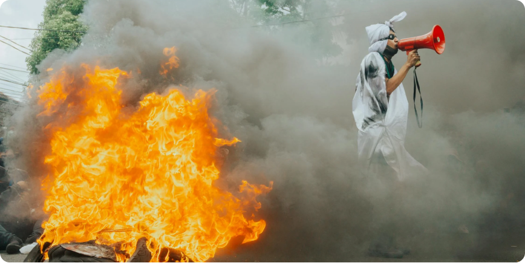
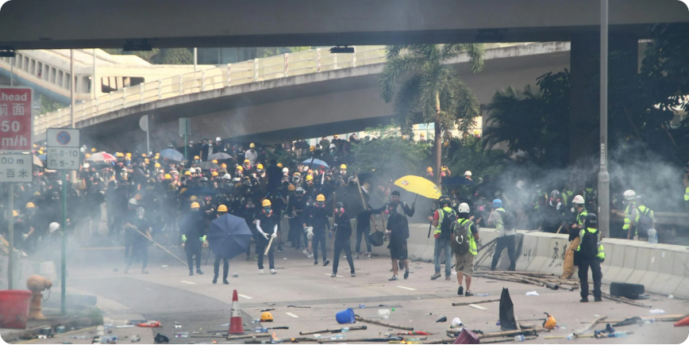

Подъем сопротивления в условиях репрессий
Современная Россия сталкивается с нарастающим внутренним сопротивлением, которое проявляется не только в массовых протестах, но и в разрастании партизанского движения. Ужесточение контроля, ограничение свобод и усиление репрессивных мер толкают людей на поиск альтернативных путей борьбы за права и свободы. В этих условиях партизанские действия становятся символом сопротивления диктатуре и стремления к справедливости. "Коалиция Вольных Народов" поддерживает этот порыв к свободе, считая, что истинное благополучие возможно только через самоопределение и уважение прав каждого народа

Партизанское движение: больше, чем вооруженная борьба
Партизанское движение в современной России — это не только ответ на силовое подавление и угнетение, но и форма самоорганизации граждан, стремящихся к справедливости. Оно выражает глубокое недовольство политической системой, которая не учитывает интересы большинства и навязывает авторитарные порядки. Партизаны — это люди, которые не желают мириться с произволом власти и готовы защищать свои права любыми доступными способами, в том числе через сопротивление на местном уровне.
В разных регионах России, особенно в этнических республиках и автономных округах, партизанское движение приобрело форму сопротивления централизованной политике, которая угрожает национальной идентичности, языкам и культурным традициям народов. В этой борьбе участвуют не только вооруженные активисты, но и обычные граждане, которые защищают свои общины, земли и право на самоопределение.
Протестные движения: защита прав человека и культуры
Современная Россия сталкивается с нарастающим внутренним сопротивлением, которое проявляется не только в массовых протестах, но и в разрастании партизанского движения. Ужесточение контроля, ограничение свобод и усиление репрессивных мер толкают людей на поиск альтернативных путей борьбы за права и свободы. В этих условиях партизанские действия становятся символом сопротивления диктатуре и стремления к справедливости. "Коалиция Вольных Народов" поддерживает этот порыв к свободе, считая, что истинное благополучие возможно только через самоопределение и уважение прав каждого народа

Роль "Коалиции Вольных Народов" в поддержке сопротивления
Что такое Коалиция
"Коалиция Вольных Народов" активно поддерживает партизанское и протестное движение, разделяя их цели по борьбе за права человека и самоопределение народов России. Мы считаем, что только уважение к правам и свободам каждого гражданина и каждого народа может стать основой для процветающего и справедливого общества. Мы видим в этих движениях мощную силу, способную изменить политический ландшафт России и заложить основу для будущего, где права человека и свобода будут неотъемлемыми.
Во что она верит
"Коалиция" верит, что ключ к настоящему миру и развитию лежит в праве народов самостоятельно выбирать свою судьбу. Мы стремимся к построению мира, в котором права всех этнических и национальных групп будут защищены, а их культура — поддержана и развита.
Будущее России — будущее свободных народов
Движение за справедливость
Партизанское движение и массовые протесты — это голос народа, который больше не готов терпеть репрессии и произвол. Это движение за справедливость, равенство и самоопределение, которые являются основными принципами "Коалиции Вольных Народов". Мы уверены, что только через борьбу за права и свободы можно достичь настоящего мира и процветания для всех народов России.
Есть ли будущее у вольных ныродов России?
Будущее России — это будущее, где у каждого народа будет право на самоопределение, где культура, язык и идентичность будут неотъемлемыми частями общества. "Коалиция" будет и дальше поддерживать все усилия, направленные на достижение этого идеала, веря в силу солидарности и сопротивления, которые ведут к подлинной свободе.